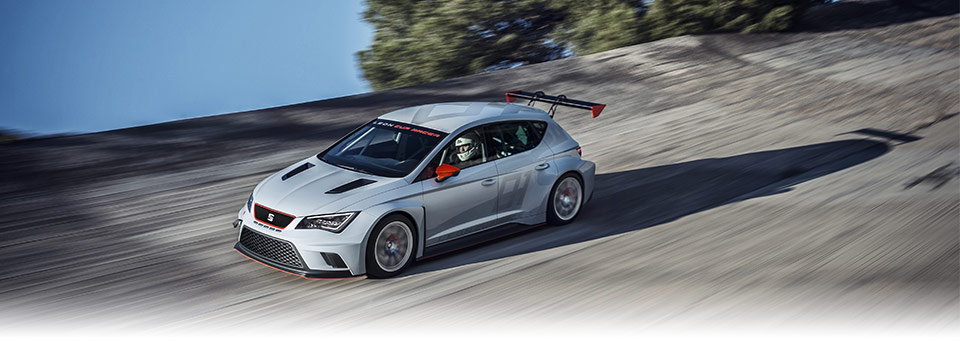
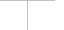
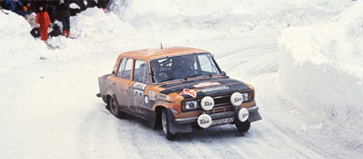
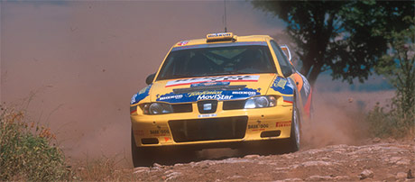
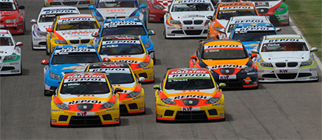

SEAT is driving forward its rich motorsport heritage with the SEAT Leon Eurocup. Kicking off the 2014 season, the launch of the new One Make Series heralds more fascinating customer sport action from SEAT and its customers. Taking place over six race weekends in six European countries, with two free practice sessions, qualification and two races per weekend, participants will compete for attractive prize money.
On the grid will be the SEAT Leon Cup Racer, a first-class motorsport machine with 330 HP / 243 kW and an extensive array of professional technology. Following on from the great sporting successes of the past, the 2014 SEAT Leon Eurocup promises to be another motorsport milestone for the Spanish brand.
SEAT to launch Leon Eurocup as One Make Series in 2014
Six race weekends in six European countries
MORE THAN 4 DECADES OF MOTORSPORT
The SEAT Leon Eurocup builds on over forty years of motorsport success and guarantees an exciting addition to the Spanish brand’s great sporting tradition. The SEAT Leon is one of the most successful race touring cars of recent years, while the SEAT Leon Supercopa and Eurocup has been one of motorsport’s most popular One Make Series. This latest series, featuring the incredible Leon Cup Racer, guarantees ongoing success for SEAT in the racing arena.


1970-1985
In 1970 the “Fórmula Nacional” began. From this point, SEAT started to participate in the world of racing, winning numerous titles, the greatest of which were third and fourth place in the Brand Cup in the Montecarlo Rally in 1977. In 1985 SEAT created the SEAT Sport department, immediately becoming involved in the start up of the VW Polo Cup on circuits and the SEAT Ibiza Rally Championship.
1987-2001
SEAT kept on participating in competitions and winning titles in different circuits across the globe, exemplified by the three consecutive 2L World Rally Cup Champion titles won in 1996, 1997 and 1998. In 2001 SEAT Sport launched the first in a series of high-performance cars, the SEAT Ibiza Cupra R.


2002-2012
The first edition of the SEAT Leon Supercopa organized by SEAT Sport meant SEAT’s return to circuit competition in 2002, to great success, with later comparable success in other European countries. SEAT continued to compete and won several titles in 2008 and 2009, the most outstanding of which was the double title of World Touring Car Champion manufacturer for the Léon and the driver’s title won by Yvan Muller in 2008.
2014
SEAT LEON CUP RACER
The all-new Leon Cup Racer, based on the five-door Leon, cuts a visually stunning figure. Combining stunning design with outstanding aerodynamics, this powerful, high-performance car by SEAT Sport sets a new standard in the company’s motorsport production.
Join the conversation: #SEATleonEUROCUP